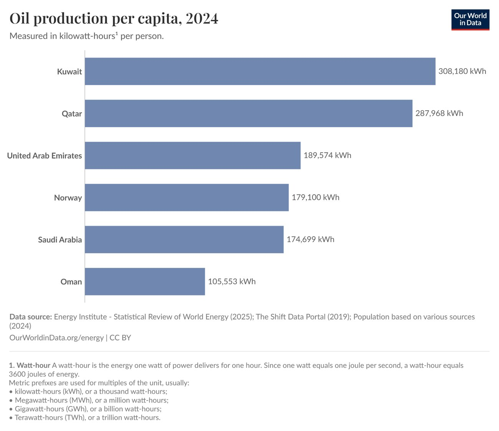

ECON 4051 · Spring 2026 · midterm paper
Is oil really a curse?
Norway produces about as much oil per person as Saudi Arabia and the UAE, yet it built a diversified economy. My argument: the Gulf's problem is policy, not oil.
The question
Oil money let the Gulf states build fast, but their private sectors stayed small and youth unemployment is rising. The usual explanation is that oil itself is a curse. If that were true, Norway should have the same problem, and it doesn't.

Two theories, and where they fall short
- Dutch disease: an oil boom raises the currency and wages, so other exports stop being competitive. But the theory assumes a fixed supply of workers, and the Gulf imports labor as it needs it, which keeps private wages down.
- The rentier state: a government that lives on oil rents, not taxes, buys loyalty with well-paid public jobs and subsidies. But that is a choice, not something oil forces: the same money could go into a sovereign wealth fund instead.
Policy, not oil
Norway put its oil revenue into the world's largest sovereign wealth fund and kept it out of the job market. The money pays for pensions and social security, wages stay grounded, and private jobs stay attractive. The Gulf passes its oil wealth on through public jobs, so young nationals wait for a government post instead of joining the private sector. With populations still growing fast, that model can't keep up.
What I propose
- Invest in high-tech industry that is run for profit and hires on merit: it pays enough to compete with public jobs, and small national populations don't need labor-intensive industry.
- Fix technical education first, since the Gulf spends less on education than the global average: scholarships, labs and modern campuses.
- Slow public hiring gradually rather than cutting jobs, and move the savings into entrepreneurship programs and venture capital for young graduates.